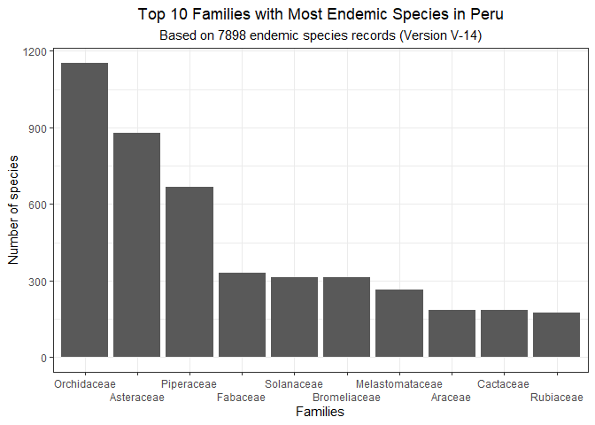

Overview
This package offers convenient access to a new and extensive database containing a list of 7,249 endemic plant species found in Peru. This comprehensive collection provides detailed botanical information, including accepted names, family, authorship, publication details, and the place and date of first publication for each species.
The construction of the ppendemic package is built upon valuable data sourced from the renowned World Checklist of Vascular Plants (WCVP) database. As a highly authoritative resource, WCVP offers comprehensive information on plant taxonomy and occurrence worldwide. Leveraging this data, the ppendemic package aims to present an up-to-date and novel compilation of Peru’s endemic plant species, tailored to the diverse ecosystems of the region. By incorporating meticulously curated data from WCVP, this package offers users a reliable and accurate resource to explore, analyze, and gain deeper insights into the rich diversity of Peru’s endemic flora.
Representing a significant advancement in our understanding of Peru’s endemic plant species, the ppendemic package surpasses the previously known list of 5,507 species presented in the Red Book of Endemic Plants of Peru, bringing the total to an impressive 7,249 species. This substantial increase in documented endemic species is a testament to the integration of data and the commitment to presenting the most up-to-date information. With this expanded and current database, researchers, conservationists, and nature enthusiasts alike can now delve into a more comprehensive and accurate account of Peru’s unique and diverse plant biodiversity. The ppendemic package stands as a valuable resource for anyone interested in the study, conservation, and appreciation of Peru’s endemic plant life.
The database spans a total of 169 families, with particular richness observed in the Orchidaceae, Asteraceae, Piperaceae, Solanaceae, Fabaceae, Bromeliaceae, Melastomataceae, Araceae, Rubiaceae, and Gentianaceae families, all of which boast the highest number of endemic species in Peru.

Installation
You can install the ppendemic package from CRAN using:
install.packages("ppendemic")
# or
pak::pak("ppendemic")Also you can install the ppendemic package from GitHub using the following command:
pak::pak("PaulESantos/ppendemic")Getting Started
After installing the ppendemic package, you can load it into your R session using:
- Use
is_ppendemic()to check if taxa are endemic
splist <- c("Aa aurantiaca", "Aa aurantiaaia",
"Werneria nubigena", "Piper politum var. politum",
"Miconia firma")
is_ppendemic(splist)
#> [1] "Aa aurantiaca is endemic"
#> [2] "Aa aurantiaca is endemic - fuzzy matching"
#> [3] "not endemic"
#> [4] "not endemic"
#> [5] "Miconia firma is endemic"- The
is_ppendemic()function is designed to work seamlessly with tibbles, allowing users to easily analyze and determine the endemism status of species within a tabular format.
tibble::tibble(splist = splist) |>
dplyr::mutate(endemic = is_ppendemic(splist))
#> # A tibble: 5 × 2
#> splist endemic
#> <chr> <chr>
#> 1 Aa aurantiaca Aa aurantiaca is endemic
#> 2 Aa aurantiaaia Aa aurantiaca is endemic - fuzzy matching
#> 3 Werneria nubigena not endemic
#> 4 Piper politum var. politum not endemic
#> 5 Miconia firma Miconia firma is endemic- Utilize the
get_ppendemic_data()function to retrieve comprehensive taxonomic information.
get_ppendemic_data(splist = splist)
#> name_submitted accepted_name accepted_family accepted_name_author
#> 1 Aa aurantiaca Aa aurantiaca Orchidaceae D.Trujillo
#> 2 Aa aurantiaaia Aa aurantiaca Orchidaceae D.Trujillo
#> 3 Werneria nubigena nill nill nill
#> 4 Piper politum var. politum nill nill nill
#> 5 Miconia firma Miconia firma Melastomataceae J.F.Macbr.
#> publication_author place_of_publication volume_and_page
#> 1 <NA> Lankesteriana 11: 3
#> 2 <NA> Lankesteriana 11: 3
#> 3 nill nill nill
#> 4 nill nill nill
#> 5 <NA> Publ. Field Mus. Nat. Hist., Bot. Ser. 13(4): 411
#> first_published dist
#> 1 (2011) 0
#> 2 (2011) 2
#> 3 nill nill
#> 4 nill nill
#> 5 (1941) 0Citation
To cite the ppendemic package, please use:
citation("ppendemic")
#> To cite ppendemic in publications use:
#>
#> Santos-Andrade PE, Vilca-Bustamante LL (2023). ppendemic: A glimpse
#> at the diversity of Peru's endemic plants.
#>
#> A BibTeX entry for LaTeX users is
#>
#> @Manual{,
#> title = {ppendemic: A glimpse at the diversity of Peru's endemic plants},
#> author = {Paul Efren Santos Andrade and Lucely L. Vilca Bustamante},
#> year = {2023},
#> note = {R package version 0.1.6},
#> doi = {10.5281/zenodo.5106619},
#> url = {https://github.com/PaulESantos/ppendemic},
#> }